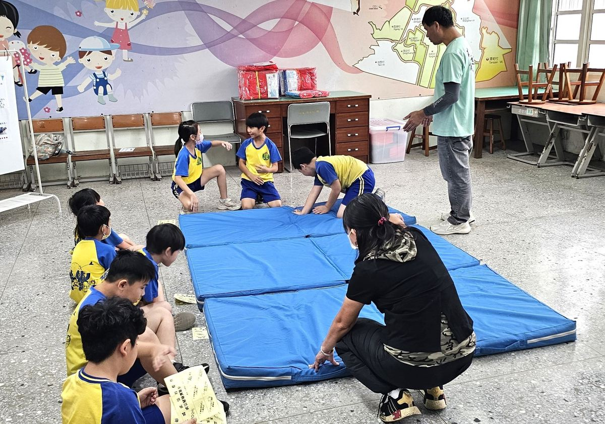
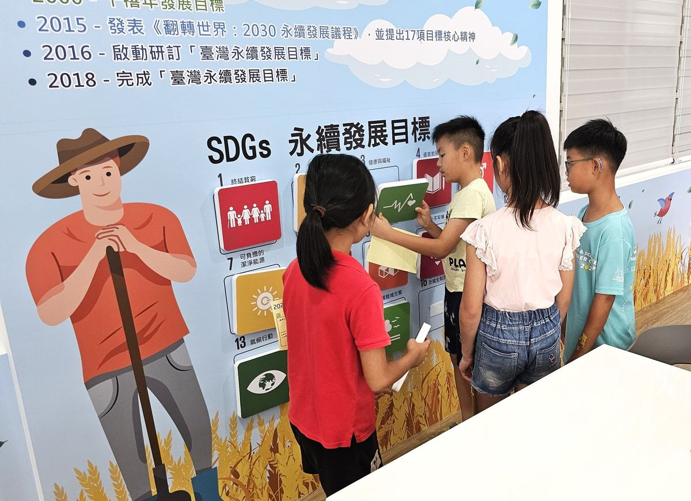
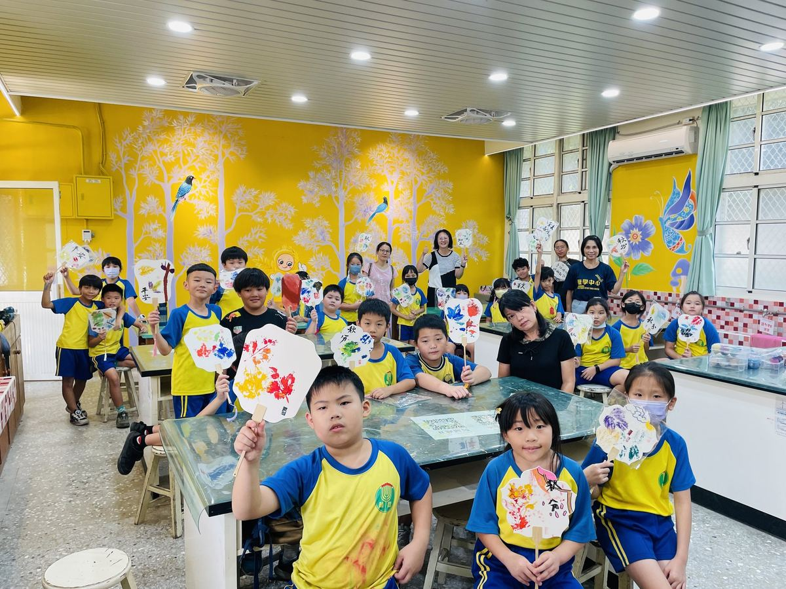
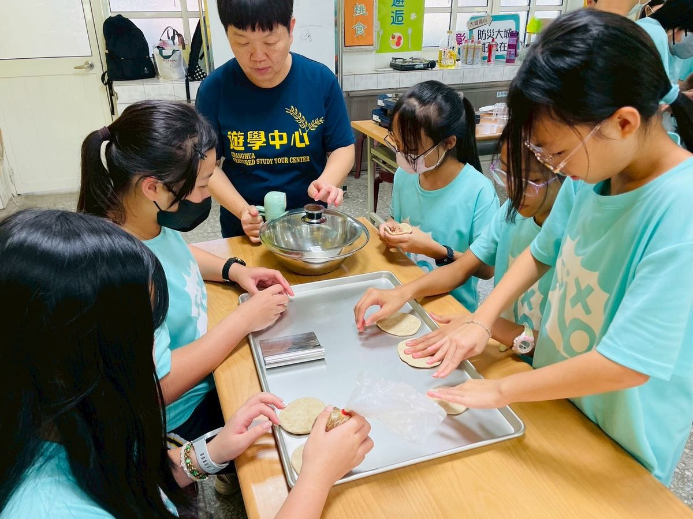
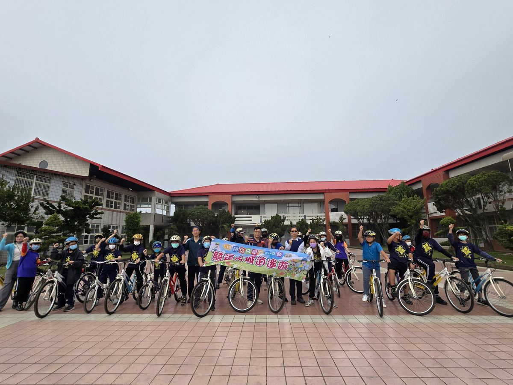
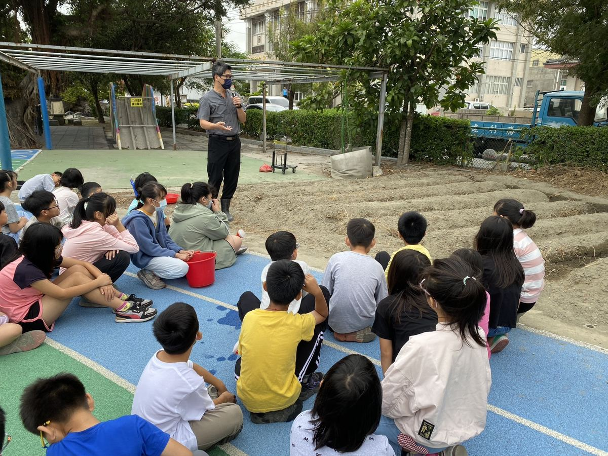

1
Mitigation
減災
Reduce the risk before it ever becomes a disaster — campus mapping, hazard audits, removing trip hazards, planting shade trees, fortifying drainage.
Reflecting our local environment, Dacheng has long deepened its work in disaster-prevention education and built a campus engineered for resilience. The west coast brings typhoons and flooding; the inland fault brings earthquake risk; the rural farming community brings unique fire and pesticide hazards.
因應在地環境特色，大城國小長期深耕防災教育，把校園打造成一座有韌性的學習場。西部沿海有颱風與淹水、彰化斷層有地震風險、農業社區又有獨特的火災與農藥管理議題——每一項都是孩子要從小理解的「在地真實」。
Rather than treating disaster as a single safety drill, we built it into the seven core learning domains — Chinese, English, math, science, social studies, art, integrative activities — so that every subject is a chance to think about preparedness.
我們不把防災當成一年一次的演習，而是把它編進國語、英文、數學、自然、社會、藝術、綜合等七大領域——每一科都有機會練習「準備好」。
The W.H.E.A.T. framework comes from a Taiwanese-language play on "大城去佗位" — "Where are we going, Dacheng?" — and answers it with five powers we want every child to grow into. Each letter is a verb in disguise.
W.H.E.A.T. 取自台語「大城去佗位」的諧音，回答的是「大城孩子要往哪裡去」——往這五個方向走。每一個字母，都是動詞。
Wrapped around the five powers is a four-step cycle borrowed from international disaster-management practice — Mitigation → Preparedness → Response → Recovery. Each step is taught with a specific drill, a specific story, and a specific reflection.
在五力之外，我們用國際防災管理的四步驟循環包覆整個課程——減災 → 整備 → 應變 → 復原。每一步都搭配特定的演練、特定的故事、特定的反思。
Theory only matters if it shows up on the timetable. Here are five activity tracks our students rotate through every year — each blending a different mix of W.H.E.A.T. powers and four-step phases.
理論要走得出課表才算數。下面是大城孩子每年會輪流體驗的五條活動主線——每一條都揉合不同的 W.H.E.A.T. 五力與四步驟組合。

A station-rotation challenge where students walk through a typhoon, an earthquake, and a fire scenario back-to-back. Each station ends with a reflection card: what did you decide, and why?

Eight quick-fire stations linking disaster prevention back to the UN Sustainable Development Goals — proving to ten-year-olds that local choices have global weight.

Dye-fan craft as post-disaster emotional recovery — turning a quiet creative ritual into a hands-on case study of why aesthetics belongs in the W.H.E.A.T. framework.

The "Taste" pillar in action — students make Tan-chien savoury cakes using local ingredients, learning what to cook when the power's out and what stays good in an emergency kit.

A full-day cycling tour of Dacheng township — students map evacuation routes, identify shelters, and meet the village heads who'd be on the phone if something happened tonight. The map is no longer a map; it's a memory.

From sowing to harvest, students walk the full agricultural cycle. By the time they pull the first wheat stalk, they've absorbed lessons on weather, water, soil, and patience — the slow disasters that demand slow preparation.
Since the 112 學年度 (2023), Dacheng Elementary has taken over the Tan-chien Campus and rebuilt it as the Changhua County Featured Field-Study Centre. Visiting students from other Changhua schools spend full immersion days here, walking through W.H.E.A.T. lessons hands-on. 112 學年度起，大城國小接管潭墘校區，將其重整為彰化縣特色遊學中心。其他學校的學生來大城整天浸潤式體驗，從手作到實地走訪——把 W.H.E.A.T. 課程變成可以「住進去」的場域。
It's a county-level role that few rural schools carry — and one we're proud to. Disaster preparedness shouldn't stop at our own school gate. 這是少有偏鄉小校承擔的縣級任務——也是我們引以為傲的角色。防災教育不應該停在自己的校門口。
From March 2026, Mr. Edward Huang — UCLA Master, UNFCCC YOUNGO member, LCOY Taiwan International Ambassador — teaches a weekly English & SDGs class every Monday noon. The course pulls the United Nations Sustainable Development Goals into reach for a Dacheng 10-year-old — one English word, one example sentence at a time — and comes with its own purpose-built flashcard + quiz tool. 2026 年 3 月起，Edward Huang 老師（UCLA 碩士、UNFCCC YOUNGO 成員、LCOY Taiwan 國際大使）每週一中午 12:40 駐課，把聯合國 17 項永續發展目標拉到 10 歲孩子的視線——一個英文單字、一個例句、慢慢來。課程含專屬閃示卡與隨堂測驗工具。
Six bilingual lessons covering the disasters every Taiwan kid should know — each unit pairs a handout with a 10-question quiz. The series is shared across all Changhua Bilingual partner schools, so a Dacheng kid and a Dazhuang kid see the same vocabulary at the same level.
六堂課，涵蓋台灣孩子應該認識的災害類型——每單元含講義 + 10 題小考。本系列跨校共用，大城孩子與大莊孩子拿到的是同一份內容、同一套詞彙基準。
Disaster education is sustainable-development education. The W.H.E.A.T. curriculum lines up tightly with the UN SDGs — here are the five most directly woven into our lessons.
防災教育，就是永續教育。W.H.E.A.T. 課程與聯合國永續發展目標緊密對應——下面五個是我們課程裡最常出現的。